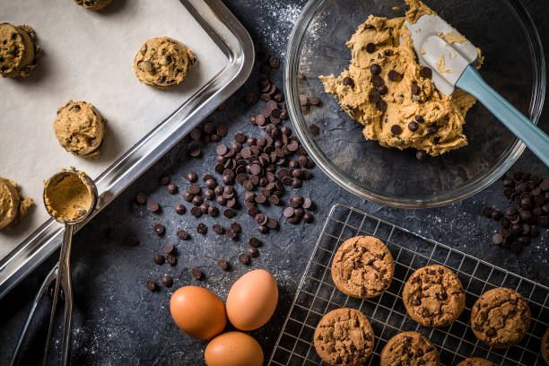

Chocolate Chip Cookies

A classic favorite, chocolate chip cookies are a delightful treat loved by people of all ages. These cookies are soft, chewy, and filled with gooey chocolate chips.
Ingredients:
- 1 cup (226 grams) unsalted butter, softened
- 1 cup (200 grams) granulated sugar
- 1 cup (220 grams) packed brown sugar
- 2 large eggs
- 1 teaspoon vanilla extract
- 3 cups (375 grams) all-purpose flour
- 1 teaspoon baking soda
- 1/2 teaspoon salt
- 2 cups (340 grams) chocolate chips
Directions:
- Preheat the oven to 350°F (180°C). In a large bowl, cream together the softened butter, granulated sugar, and brown sugar until light and fluffy.
- Beat in the eggs one at a time, then stir in the vanilla extract. In a separate bowl, whisk together the all-purpose flour, baking soda, and salt. Gradually add the dry ingredients to the creamed mixture and mix well.
- Stir in the chocolate chips. Drop rounded tablespoons of dough onto ungreased baking sheets.
- Bake for 10 to 12 minutes, or until the edges are golden brown. Allow the cookies to cool on the baking sheets for a few minutes before transferring them to wire racks to cool completely. Enjoy!